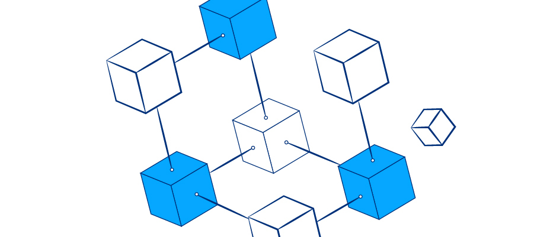

DAOs: ¿Qué posibilidades abren al mundo?
Las DAOs se están abriendo paso en nuevos sectores y están mostrando de qué pueden llegar a ser capaces con su revolucionaria tecnología. En este artículo vemos de qué se tratan y cuáles pueden llegar a ser algunas de sus aplicaciones
La organización en el siguiente nivel
Las organizaciones de personas siempre fueron evolucionando y cambiando con el tiempo. El desarrollo tecnológico siempre nos ha brindado herramientas que dieron lugar a transformaciones importantes en la forma en la que nos organizamos.
Siguiendo esta idea, podemos decir que es justamente esto lo que está sucediendo con el desarrollo de DAOs, que recordemos son organizaciones autónomas descentralizadas.
Estas novedosas organizaciones surgen gracias a una nueva tecnología disponible y su gradual establecimiento está dando muestras de lo que pueden ser capaces. Llevan a una nueva escala la coordinación humana para la toma y la ejecución de decisiones en torno a un objetivo común.
La toma de decisiones es un elemento central para que cualquier tipo de organización pueda funcionar y alcanzar sus objetivos. Es tan importante esto que una forma de caracterizar las diferentes organizaciones pasa justamente por la forma en la que se toman las decisiones, por la forma de obtener consenso.
Con el desarrollo de Bitcoin, la primera forma de dinero nativamente digital, la industria de las criptomonedas ha demostrado que se puede obtener consenso entre desconocidos de forma totalmente digital.
Y con la subsiguiente llegada de los contratos inteligentes al espacio cripto se abrió paso un sinfín de nuevas posibilidades gracias a la versatilidad para construir todo tipo de cosas que permite la programación.
En esencia, una DAO permite organizar un grupo de personas de cualquier parte del mundo que comparten el mismo objetivo. La utilización de contratos inteligentes le otorga transparencia a su funcionamiento.
El manejo del fondo de dinero por ejemplo podrá ser siempre público, y cualquier proceso de gobernanza también, ya sea de votación a la hora de decidir, como de ejecución a la hora de llevar adelante lo decidido.
Mayor desarrollo, mayores posibilidades
Puede que esto suene muy lejano, o que solo sea posible al interior de la industria cripto para desarrollar protocolos DeFi, como MakerDao o Compound. Pero lo cierto es que cada vez son más las personas que ven en ellas herramientas de organización para problemas u objetivos propios de la vida cotidiana.
Por ejemplo, recientemente el influencer argentino Santiago Maratea anunció que pretende crear una DAO con la ayuda de Mariano Di Pietrantonio (Co-Founder de Maker Growth) para un mejor manejo de su ONG.
Y si bien se trata de un proyecto a largo plazo, es una gran noticia este tipo de iniciativa. Una DAO puede servir mucho para facilitar, entre otras cosas, el proceso de recaudación de fondos, ya que podría permitir por ejemplo eliminar los inconvenientes para recibir fondos desde diferentes países.
Además, permitiría también una forma mucho más sencilla de generar que el dinero recaudado no pierda su valor en el tiempo. Por ejemplo, puede ser decidida de forma democrática mediante votación la inversión de dichos fondos.
Sería también muy factible la creación de una billetera-multifirma. Ella requeriría la autorización de más de un miembro de la ONG para la utilización de los fondos. Y todo esto, sería realizado de forma transparente y pública.
Otro ejemplo de una DAO concreta que tuvo un gran impacto fue la ConstitutionDAO. Ella se originó para recaudar fondos con el objetivo de comprar una primera edición de la constitución estadounidense.
Si bien no lograron el objetivo, la recaudación realizada superó por completo las expectativas de todos. Esto demostró la potencia que tienen las DAO para materializar un objetivo concreto de gran magnitud.
Recién estamos empezando a ver la enorme cantidad de posibilidades que las DAO pueden llevar a cabo. Y sin duda alguna, estamos lejos de ver su mejor versión. De todas formas, el futuro es muy prometedor para este tipo de organizaciones.
Categoria: Actualidad
Tags: Criptomonedas / DAOs